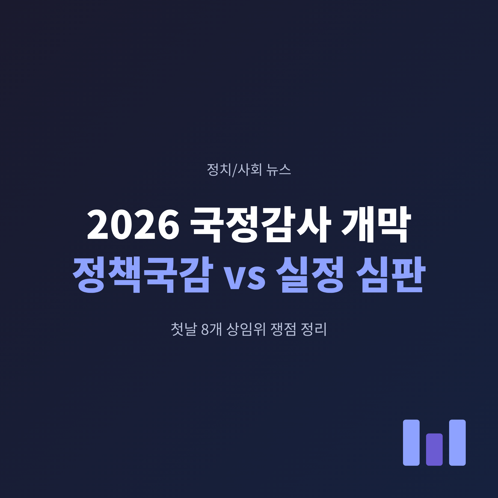
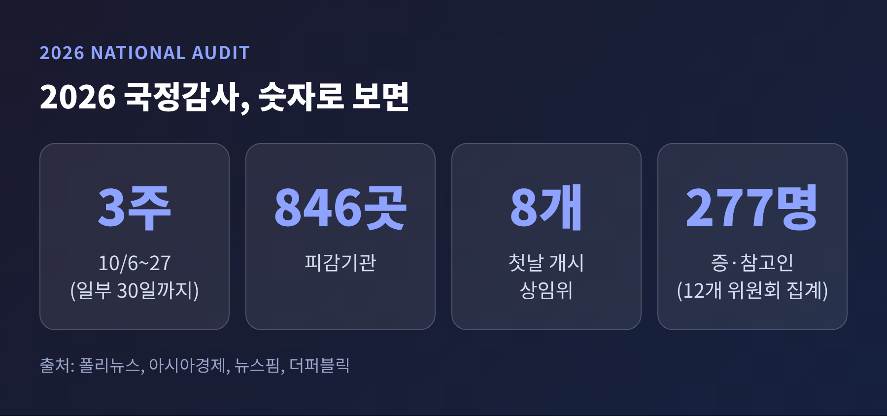
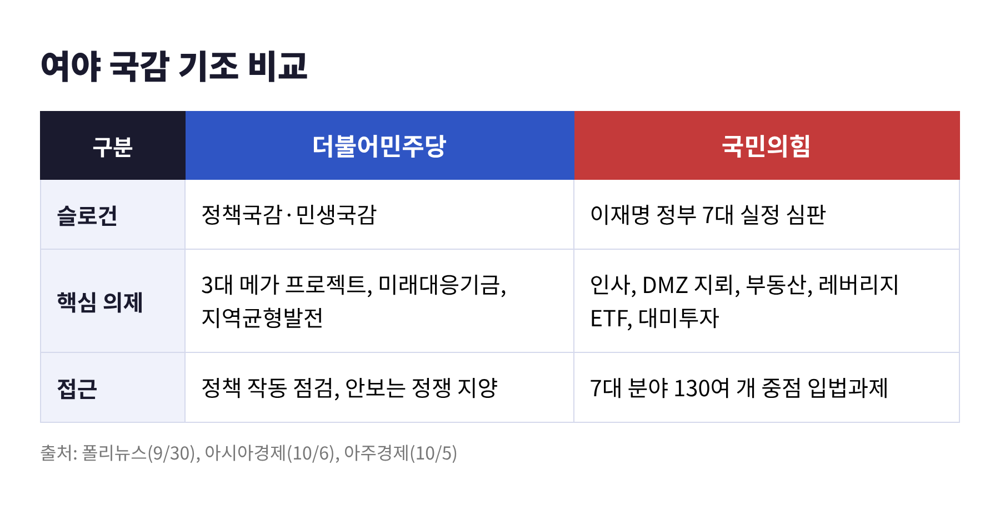
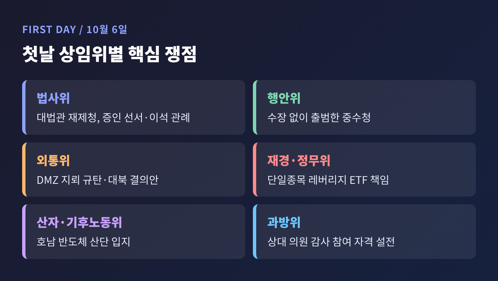
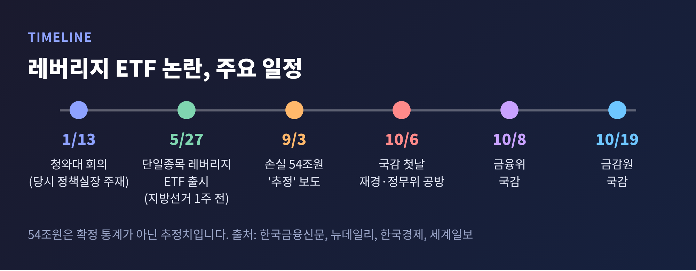
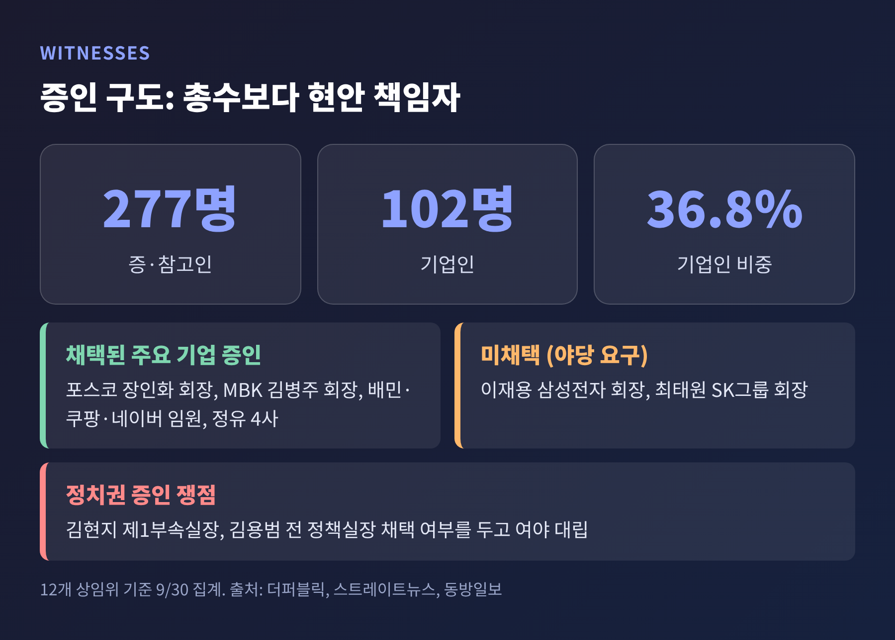
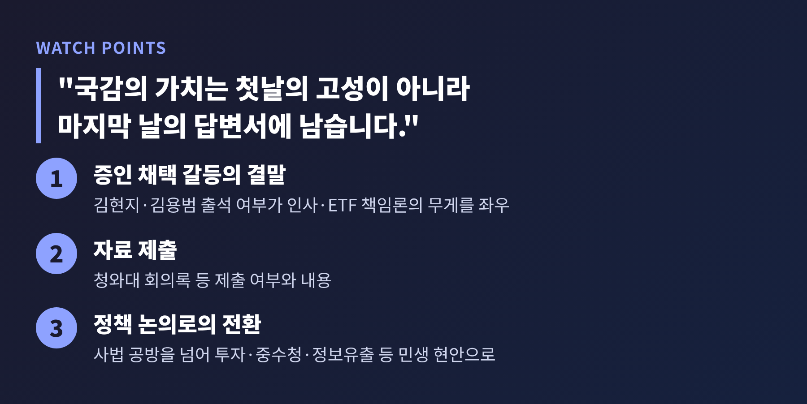

2026년 국정감사가 10월 6일 막을 올렸습니다. 이재명 정부 출범 후 두 번째 국감이자, 집권 2년차 국정운영을 처음으로 의회가 점검하는 자리입니다.
오늘은 개막일 기준으로 여야가 내건 기조, 첫날 8개 상임위에서 오간 쟁점, 그리고 증인 구도를 정리해 보겠습니다.
조희대 대법원장 증인 문제는 앞선 글에서 다뤘기에, 이번에는 국감 전체의 그림에 무게를 둡니다.
국감은 10월 6일부터 27일까지 3주간 진행됩니다. 정보위원회와 성평등가족위원회, 그리고 운영위원회의 대통령비서실 감사는 30일까지 이어집니다. 일부 매체는 기간을 10월 30일까지 25일로 적었는데, 기관별 일정이 달라 생긴 차이로 보입니다.
피감기관은 846곳입니다. 17개 상임위 가운데 16개가 감사계획서를 확정했고(아시아경제 10월 6일 보도), 첫날에는 법제사법위, 정무위, 재정경제기획위, 과학기술정보방송통신위, 외교통일위, 행정안전위, 산업통상자원중소벤처기업위, 기후에너지환경노동위 등 8곳이 오전 10시에 일제히 시작했습니다.

국감은 정부가 1년간 해 온 일을 국회가 직접 따져 묻는 거의 유일한 정례 절차입니다. 올해는 그 시점이 공교롭게 겹쳤습니다.
10월 2일 검찰청이 폐지되고 중대범죄수사청과 공소청이 출범했습니다. 국감은 그로부터 나흘 뒤에 열렸습니다(폴리뉴스 9월 30일 보도). 검찰개혁이라는 큰 제도 변화가 현장에서 어떻게 작동하는지, 첫 점검을 받는 셈입니다.
정치적 의미도 작지 않습니다. 대통령 집권 2년차 중간 평가의 성격이 있고, 의석 구도상 여당이 위원회 운영의 주도권을 쥐고 있습니다. 증인 채택 하나하나가 곧 힘겨루기가 되는 이유입니다.
더불어민주당의 기조는 '정책국감·민생국감'입니다. 한병도 원내대표는 "올해 국감의 민주당 기조는 첫째도, 둘째도, 셋째도 민생"이라고 밝혔습니다. 3대 메가 프로젝트와 미래대응기금 같은 핵심 정책의 성과를 점검하고, 지역균형발전과 민생 회복 상황을 짚겠다는 구상입니다. 민감한 안보 사안은 정쟁 대상으로 삼지 않겠다는 입장도 전해졌습니다.
국민의힘은 '이재명 정부 7대 실정 심판'을 내걸었습니다. 7대 분야에 걸쳐 130여 개 중점 입법과제도 제시했습니다. 다만 7개 항목의 전체 목록은 확인한 기사에 명시되어 있지 않았습니다. 기사에서 반복해 언급된 쟁점은 인사 논란, DMZ 북한 지뢰 폭발, 부동산, 단일종목 레버리지 ETF 도입 책임, 대미투자였습니다.
양쪽 모두 자신의 프레임이 옳다고 말합니다. 여당은 야당이 정치공세로 국감을 소모한다고 보고, 야당은 여당이 '민생'을 앞세워 정부를 방어한다고 봅니다. 어느 쪽이 맞는지는 감사 결과로 판단할 일입니다.

첫날은 사법부, 금융, 외교, 산업 현안이 한꺼번에 올라왔습니다.
법사위에서는 대법관 재제청 문제를 둘러싸고 고성이 오갔습니다. 민주당은 국회법에 따른 증인 선서를 요구했고, 국민의힘은 대법원장이 인사말 뒤 이석하는 관례를 들어 사법권 독립을 강조했습니다. 상세한 경위는 앞선 글에 정리했습니다.
행정안전위에서는 수장 없이 출범한 중수청이 도마에 올랐습니다. 윤호중 행안부 장관은 "최선을 다했지만, 대단히 송구하게 생각한다"고 답했습니다(세계일보 10월 6일 보도). 제도는 시작됐지만 지휘부 공백이 남았다는 점을 정부 스스로 인정한 장면입니다.
외교통일위에서는 DMZ 지뢰 도발을 규탄하는 결의안이 논점이었습니다. 국민의힘 김대식 의원이 신속한 결의안 마련을 요구했고, 민주당 홍기원 의원은 "반대할 이유는 없으나"라며 국방위의 유사 결의안이 무산된 과정을 지켜보자는 입장을 보였습니다.
산업위와 기후에너지환경노동위에서는 호남 반도체 산업단지가 쟁점이었습니다. 국민의힘 조지연 의원은 대구·경북 예산 부족을 거론하며 '호남 1극 성장' 프로젝트라고 비판했습니다. 민주당 신정훈 의원은 "상대적으로 개발 여력이 많아 호남에 입지를 정한 것"이라고 반박했습니다. 이 사업은 800조원 규모 투자로 거론됩니다(폴리뉴스).
이밖에 과방위는 질의에 앞서 상대 의원의 감사 참여 자격을 둘러싼 설전이 있었습니다. 정무위·재경위의 쟁점은 아래에서 따로 보겠습니다.

첫날 가장 구체적인 책임 공방은 단일종목 레버리지 ETF였습니다. 5월 삼성전자와 SK하이닉스를 기초로 한 상품이 나온 뒤 개인투자자 손실이 이어졌다는 점이 출발점입니다(한국금융신문).
이형일 경제부총리는 "개인 투자자들에게 많은 손실이 발생한 것을 미리 해결하지 못한 것을 안타깝게 생각한다"고 답했습니다. 권대영 재경부 1차관은 최종 결정은 금융위원회가 내렸다며 "송구한 마음"이라고 했습니다. 야당은 청와대 회의록과 사전 검토 자료 제출을 요구했습니다. 1월 13일 청와대 회의를 당시 김용범 정책실장이 주재했는데, 그의 역할을 묻는 질문에 이 부총리가 "기억 안 난다"고 답한 것이 세계일보에 보도됐습니다.
손실 규모를 두고는 '54조원'이라는 숫자가 나옵니다. 다만 한국경제 9월 3일자는 "추정까지 나오고 있다"고만 썼고, 산출 주체와 방식은 밝히지 않았습니다. 국민의힘은 이 수치를 앞세워 관련자 고발까지 나섰지만, 확정 통계로 보기는 어렵습니다. 이 점은 여야 어느 쪽 주장이든 신중하게 볼 대목입니다.
상품 출시일이 5월 27일, 지방선거 일주일 전이라는 점도 쟁점입니다(뉴데일리). 야당은 정치적 계산이 있었는지 묻고, 정부는 이를 부인하는 취지로 답했습니다. 금융위 국감이 10월 8일, 금감원 국감이 10월 19일 예정되어 있어 공방은 이어질 전망입니다.

올해 증·참고인은 277명입니다. 이 가운데 102명, 36.8%가 기업인입니다(12개 상임위 기준 9월 30일 집계, 더퍼블릭).
포스코 장인화 회장, MBK파트너스 김병주 회장, 배달의민족과 쿠팡, 네이버 임원, 정유 4사 관계자 등이 이름을 올렸습니다. 반면 야당이 요구한 이재용 삼성전자 회장과 최태원 SK그룹 회장은 증인으로 채택되지 않았습니다. 총수보다 해당 현안을 실제 맡은 책임자, 이를테면 정보보호책임자를 부르는 경향이 보인다는 분석이 있습니다(스트레이트뉴스).
정치권 증인도 쟁점입니다. 국민의힘은 김현지 대통령실 제1부속실장과 김용범 전 정책실장 채택을 요구했고, 민주당은 정치공세라며 반대해 왔습니다(동방일보 10월 4일 보도). 김 전 실장은 이미 공직을 떠난 상태라 절차상 복잡함도 있습니다.
기업인 증인이 많다는 점에는 우려도 나옵니다. 매일신문은 국감이 기업을 겁박하는 자리가 되어선 안 된다는 현장 목소리를 전했습니다. 반대로 소비자 피해와 정보 유출 같은 현안은 책임자를 불러 직접 묻는 편이 낫다는 시각도 있습니다. 양쪽 모두 일리가 있습니다.

국감은 이제 막 시작됐습니다. 남은 일정에서 눈여겨볼 대목은 세 가지입니다.
첫째, 증인 채택 갈등의 결말입니다. 김현지 실장과 김용범 전 실장이 끝내 출석하는지에 따라 인사와 ETF 책임론의 무게가 달라집니다.
둘째, 수치와 책임을 가르는 자료 제출입니다. 청와대 회의록이 제출되는지, 제출된다면 무엇이 담겨 있는지가 공방의 방향을 정할 것입니다.
셋째, 국감이 정책 논의로 이어지는가입니다. 첫날 사법 공방이 투자, 중수청, 정보유출 같은 생활 밀착 현안을 가렸다는 지적이 나왔습니다(매일신문). 작년 국감 역시 대법원장을 향한 야유로 어수선했다는 언급이 있었습니다.

정리하면 이렇습니다.
여당은 민생 점검을, 야당은 실정 심판을 말하지만, 국민이 받아 들 성적표는 구호가 아니라 질의의 구체성과 후속 조치에서 나올 것입니다.
"국감의 가치는 첫날의 고성이 아니라 마지막 날의 답변서에 남습니다."
3주 뒤 이 국감이 무엇을 바꿔 놓았는지, 그 기록을 다시 확인해 보시길 권합니다.
※ 이 글은 2026년 10월 6일까지 보도된 내용을 바탕으로 정리했으며, 일부 수치는 매체별 표기가 달라 확인된 범위만 적었습니다.